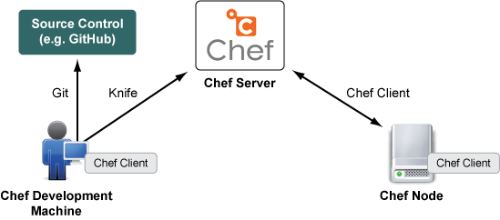
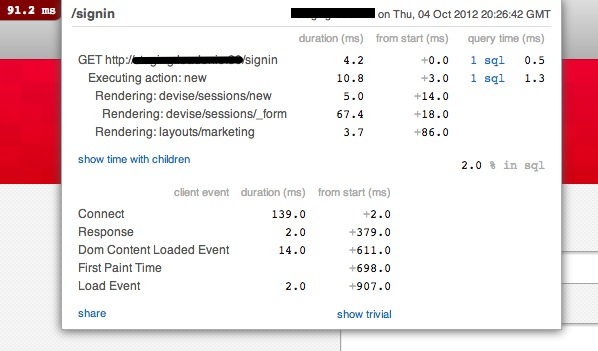
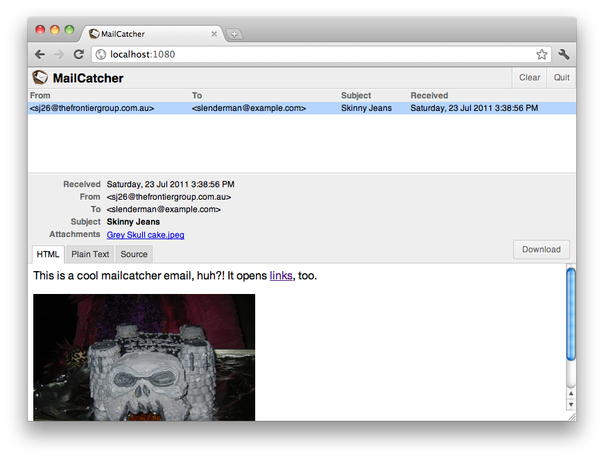

Me
- 6+ years experience
- Linux and Databases administrator
- Web and Mobile developer (Ruby, Java, JavaScript, Objective-C, C/C++)
- Open-Source developer
- MongodbLogger for Rails
- SMTRails and SHTRails (shared templates for rails)
- SkypeKit for Ruby
Chef
Chef
Chef is an open-source systems integration framework built specifically for automating the cloud.
Why Chef?
- Efficiency
- Scalability
- Economics
Why Chef?

Chef Types
- Chef Solo
- Chef Server
- Hosted Chef (Chef Server by Opscode)
Chef Solo
- Chef Solo
- Chef Server
- Hosted Chef (Chef Server by Opscode)

Knife
Chef Solo
Knife is a powerful command-line interface (CLI) that comes with Chef.
gem install knife-solo
Knife commands
Chef Solo
- kitchen - command is used to create a new directory structure that fits with chef’s standard structure and can be used to build and store recipes.
- prepare - command installs Ruby, RubyGems and Chef on a given host. It’s structured to auto-detect the target OS and change the installation process accordingly.
- cook - command uploads the current kitchen (chef repo) to the target host and runs chef-solo on that host.
- wash_up - command removes the uploaded kitchen from the host.
Kitchen
Chef Solo
Kitchen is a place where you build and store recipes. And cook!
knife kitchen mychefrepo
The kitchen command simply takes a name of the directory to store the kitchen structure.
mykitchen/
├── cookbooks
├── data_bags
├── nodes
├── roles
├── site-cookbooks
└── solo.rb
Prepare
Chef Solo
knife prepare ubuntu@10.0.0.201
knife bootstrap --template-file bootstrap.centos.erb -u root 10.0.0.201
echo '{"run_list":[]}' > nodes/10.0.0.201.json
Cook
Chef Solo
knife cook ubuntu@10.0.0.201
That's it!
Librarian
Chef Solo
gem install librarian
librarian-chef init
Librarian
Chef Solo
librarian-chef install
├── Cheffile
├── Cheffile.lock
├── chefignore
├── cookbooks
├── data_bags
├── files
├── nodes
├── roles
├── site-cookbooks
├── solo.rb
└── tmp
Librarian
Chef Solo
$ cat Cheffile
#!/usr/bin/env ruby
#^syntax detection
site 'http://community.opscode.com/api/v1'
cookbook 'nginx',
:git => 'git://github.com/opscode-cookbooks/nginx.git'
cookbook 'rvm'
cookbook 'ruby_build'
cookbook 'rbenv',
:git => 'https://github.com/fnichol/chef-rbenv'
cookbook 'postgresql',
:git => 'git://github.com/opscode-cookbooks/postgresql.git'
Recipe
Chef Solo
├── CHANGELOG.md
├── CONTRIBUTING
├── Gemfile
├── LICENSE
├── README.md
├── attributes
├── definitions
├── files
├── metadata.rb
├── recipes
├── templates
└── test
Recipe attributes
Chef Solo
$ cat attributes/default.rb
default['nginx']['version'] = "1.2.3"
default['nginx']['dir'] = "/etc/nginx"
default['nginx']['log_dir'] = "/var/log/nginx"
default['nginx']['binary'] = "/usr/sbin/nginx"
case node['platform']
when "debian","ubuntu"
default['nginx']['user'] = "www-data"
default['nginx']['init_style'] = "runit"
when "redhat","centos","scientific","amazon","oracle","fedora"
default['nginx']['user'] = "nginx"
default['nginx']['init_style'] = "init"
else
default['nginx']['user'] = "www-data"
default['nginx']['init_style'] = "init"
end
Recipe definitions
Chef Solo
$ cat definitions/nginx_site.rb
define :nginx_site, :enable => true do
if params[:enable]
execute "nxensite #{params[:name]}" do
command "/usr/sbin/nxensite #{params[:name]}"
notifies :reload, resources(:service => "nginx")
not_if do ::File.symlink?("#{node['nginx']['dir']}/sites-enabled/#{params[:name]}") end
end
else
execute "nxdissite #{params[:name]}" do
command "/usr/sbin/nxdissite #{params[:name]}"
notifies :reload, resources(:service => "nginx")
only_if do ::File.symlink?("#{node['nginx']['dir']}/sites-enabled/#{params[:name]}") end
end
end
end
Recipe definitions
Chef Solo
template "#{node[:nginx][:dir]}/sites-available/#{node[:app][:name]}.conf" do
source "nginx.conf.erb"
mode "0644"
end
nginx_site "#{node[:app][:name]}.conf"
$ cat nginx.conf.erb
upstream prod_unicorn {
server unix:<%= node[:app][:web_dir] %>/shared/tmp/sockets/unicorn.sock fail_timeout=0;
}
server {
listen 80 default;
...
Recipe execution
Chef Solo
├── authorized_ips.rb
├── commons.rb
├── default.rb
├── http_echo_module.rb
├── http_geoip_module.rb
├── http_gzip_static_module.rb
├── http_realip_module.rb
├── http_ssl_module.rb
├── http_stub_status_module.rb
├── naxsi_module.rb
├── ohai_plugin.rb
├── passenger.rb
├── source.rb
└── upload_progress_module.rb
Recipe execution
Chef Solo
$ cat source.rb
nginx_url = node['nginx']['source']['url'] ||
"http://nginx.org/download/nginx-#{node['nginx']['version']}.tar.gz"
unless(node['nginx']['source']['default_configure_flags'])
node.set['nginx']['source']['default_configure_flags'] = [
"--prefix=#{node['nginx']['source']['prefix']}",
"--conf-path=#{node['nginx']['dir']}/nginx.conf"
]
end
include_recipe "nginx::ohai_plugin"
include_recipe "build-essential"
Recipe execution
Chef Solo
"run_list": [
"nginx[source]"
]
or
include_recipe "nginx::source"
Simple example of recipe
Chef Solo
├── recipes
│ └── default.rb
└── templates
└── default
├── database.yml.erb
├── nginx.conf.erb
└── unicorn.rb.erb
Simple example of recipe (default.rb)
Chef Solo
# packages
package "git-core"
# curb gem
package "libcurl3"
package "libcurl3-gnutls"
package "libcurl4-openssl-dev"
# rmagick gem
package "imagemagick"
package "libmagickcore-dev"
package "libmagickwand-dev"
# ruby
include_recipe "ruby_build"
include_recipe "rbenv::system"
# nginx
include_recipe "nginx::source"
# gems
gem_package "bundler"
# nginx config
template "#{node[:nginx][:dir]}/sites-available/#{node[:app][:name]}.conf" do
source "nginx.conf.erb"
mode "0644"
end
nginx_site "#{node[:app][:name]}.conf"
# dirs
web_dir = node[:app][:web_dir]
directory web_dir do
owner node[:user][:name]
mode "0755"
end
%w{shared shared/log shared/config}.each do |dir|
directory "#{web_dir}/#{dir}" do
owner node[:user][:name]
mode "0755"
end
end
# folders
shared_config_dir = "#{node[:app][:web_dir]}/shared/config"
template "#{shared_config_dir}/database.yml" do
source "database.yml.erb"
mode "0644"
end
template "#{shared_config_dir}/unicorn.rb" do
source "unicorn.rb.erb"
mode "0644"
end
Chef-Solo + Caphub = <3
Chef Solo
Summary
- All configs and steps to setup your cloud in one place - in your git repository
- Easy to maintain and update your servers
- Easy to create the same copy of instances
- Ruby language - perfect choice for such task!
Celluloid
Celluloid
Celluloid is a concurrent object oriented programming framework for Ruby which lets you build multithreaded programs out of concurrent objects just as easily as you build sequential programs out of regular objects
gem install celluloid
Main features
Celluloid
- Automatic "deadlock-free" synchronization
- Fault-tolerance
- Futures: Ever wanted to call a method "in the background" and retrieve the value it returns later?
Basic Usage
Celluloid
require 'rss'
require 'open-uri'
class FeedParser
def initialize(url)
@url = url
end
def count
open(@url) do |f|
rss = RSS::Parser.parse(f.read, false)
count = rss.items.size
puts "#{count} in #{@url}"
count
end
end
end
counts = $*.map { |url| FeedParser.new(url).count }
total = counts.inject(:+)
puts "#{total} total" if total
Basic Usage
Celluloid
$ ruby 1.rb http://feeds2.feedburner.com/Rubyflow http://feeds.feedburner.com/ualeopard http://feeds2.feedburner.com/Rubyflow http://feeds.feedburner.com/ualeopard http://feeds2.feedburner.com/Rubyflow http://feeds.feedburner.com/ualeopard http://feeds2.feedburner.com/Rubyflow http://feeds.feedburner.com/ualeopard http://feeds2.feedburner.com/Rubyflow http://feeds.feedburner.com/ualeopard
10 in http://feeds2.feedburner.com/Rubyflow
49 in http://feeds.feedburner.com/ualeopard
10 in http://feeds2.feedburner.com/Rubyflow
49 in http://feeds.feedburner.com/ualeopard
10 in http://feeds2.feedburner.com/Rubyflow
49 in http://feeds.feedburner.com/ualeopard
10 in http://feeds2.feedburner.com/Rubyflow
49 in http://feeds.feedburner.com/ualeopard
10 in http://feeds2.feedburner.com/Rubyflow
49 in http://feeds.feedburner.com/ualeopard
295 total
Basic Usage
Celluloid
require 'rss'
require 'open-uri'
require 'celluloid'
class FeedParser
include Celluloid
def initialize(url)
@url = url
end
def count
open(@url) do |f|
rss = RSS::Parser.parse(f.read, false)
count = rss.items.size
puts "#{count} in #{@url}"
count
end
end
end
counts = $*.map { |url| FeedParser.new(url).future(:count) }
total = counts.map(&:value).inject(:+)
puts "#{total} total" if total
Basic Usage
Celluloid
Problem: N * 10^3 links
Thread.list.count ~ N * 10^3
Pool
Celluloid
require 'rss'
require 'open-uri'
require 'celluloid'
class FeedParser
include Celluloid
def count(url)
open(url) do |f|
rss = RSS::Parser.parse(f.read, false)
count = rss.items.size
puts "#{count} in #{url}"
count
end
end
end
pool = FeedParser.pool(size: 6)
futures = $*.map { |url| pool.future(:count, url) }
total = futures.map(&:value).inject(:+)
puts "#{total} total" if total
Gotchas
Celluloid
- NEVER RETURN self (or pass self as an argument to other actors)
- Don't mutate the state of objects you've passed as arguments in calls to other actors
- Don't mix Ruby thread primitives and calls to other actors
- Use Fibers at your own risk
Linking
Celluloid
require 'celluloid'
class HardWorker
include Celluloid
def initialize(autolaunch = false)
run! if autolaunch
end
def run
puts "do something"
raise "111" if Random.rand(3) == 2
end
end
class Launcher
include Celluloid
trap_exit :relaunch
def launch_worker
HardWorker.new_link.run!
end
def relaunch(actor, reason)
launch_worker
end
end
Launcher.new.launch_worker
Sidekiq
Celluloid
# app/workers/hard_worker.rb
class HardWorker
include Sidekiq::Worker
def perform(name, count)
puts 'Doing hard work'
end
end
HardWorker.perform_async('bob', 5)
Useful gems
Bonus for you
rack-mini-profiler
Useful gems

strong_parameters
Useful gems
Not perfect way:
config.active_record.whitelist_attributes = true
attr_accessible :name, :age
Usage:
params.require(:person).permit(:name, :age)
ActiveRecord::Base.send(:include, ActiveModel::ForbiddenAttributesProtection)
rabl
Useful gems
app/views/articles/show.rabl
object @article
attributes :id, :name, :published_at
if current_user.admin?
node(:edit_url) { |article| edit_article_url(article) }
end
child :author do
attributes :id, :name
node(:url) { |author| author_url(author) }
end
app/views/articles/index.rabl
collection @articles
extends "articles/show"
smt_rails
Useful gems
<%= render "tests/test", :mustache => {msg: "Test"} %> s
var content = SMT['tests/test']({msg: "Test"});
mailcatcher
Useful gems

guard
Useful gems
Other gems
Useful gems
- spork and zeus - Boot rails app and tests in under a second
- brakeman - a static analysis security vulnerability scanner for Ruby on Rails
- oj and multi_json - optimized JSON and back-end for JSON handling
- bullet - a rails plugin/gem to kill N+1 queries and unused eager loading
- js-routes - brings Rails named routes to javascript
- ...
<Thank You!>
Contact information